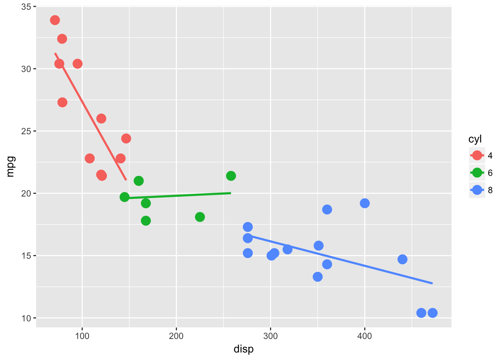
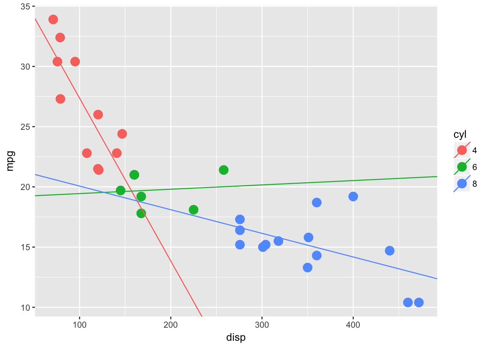

Piping with Purrr
2017 March 24
 .
.
Piping %>% in R has been around since the debut of library(magrittr) in 2014 and has been adopted by some of the most popular packages on CRAN including library(tidyverse). library(purrr) is a relatively new package, released in 2016, that uses simple syntax for adding powerful functional programming tools to R. This quick data(mtcars) run through aims to show the potential of pairing these two packages.
Magrittr
library(magrittr)Goals: * Faster coding * Improved readability * Eliminate nested functions
Six Rules:
# 1. By default the left-hand side (LHS) will be piped in as the first argument of the function appearing on the right-hand side (RHS).
LHS %>% some_fxn(...) = some_fxn(LHS, ...)
# 2. `%>%` may be used in a nested fashion, e.g. it may appear in expressions within arguments.
summarise(mtcars %>% filter(cyl == 4), avg_mpg = mean(mpg))
# 3. When the LHS is needed at a position other than the first, one can use the dot,'.', as placeholder.
some_chr_vector %>% gsub("find", "replace", .)
# 4. The dot in a formula is not confused with a placeholder.
list_of_dataframes %>% map(~ lm(response ~ ., data = .))
# 5. Whenever only one argument is needed, the LHS, then one can omit the empty parentheses.
some_object %>% class
# 6. A pipeline with a dot (.) as LHS will create a unary function.
mean_rm <- . %>% mean(na.rm = T)The reciprocal pipe %<>%
Hands down my favorite tool in R. This special pipe is shorthand for storing the result from the RHS evalution by overwriting the original LHS value. This is very useful with certain functions and can save a bunch of typing and intermediate variables in common data-munging.
some_chr_vector %<>% gsub("find", "replace", .) # now its saved
some_chr_vector %<>% factor(levels = c("a","b")) # ready for ggplot()Hadley doesn’t like these %<>%, due to principles of explicit definition, so thats why they don’t load with tidyverse. I think they are beyond swell and hope you do too.
Trend setting
To play nicely with magrittr, functions should be defined with the data argument first, not like lm(formula, data, ...) or qplot(x, y = NULL, ..., data). This allows minimal typing and maximum foucs on the series of actions. New tidyverse packages are designed with this in mind and purrr is no different.
Purrr
library(purrr)Aims: * Simplify annonymous functions * Bring some “traditonal” functional programming to R * Use variants to control return value
~ mean(.) instead of function(x){mean(x)}
Since annonymous functions are everywhere in R, lapply(..., function(x){ anything custom } ), purrr’s map(.x, .f, ...) is aimed at improving their syntax. This makes for code that is easier to understand and easie to type. map() is the major workhorse function. Let looks at its shorthand syntax features.
# no need for () if args < 2
mtcars %>% split(.$cyl) %>%
map(class)
# if args > 1 use ~ and magrittr's . syntax
mtcars %>% split(.$cyl) %>%
map(~ lm(mpg ~ gear, data = .)) # same rules for flexible positioningmap_df() and friends
Maybe the most useful helper function is map_df. If the objects in your_list are already data frames (and they usually are), instead of using map(your_list, ...) %>% do.call(rbind, .) just use map_df(your_list, ...). This is very useful for reading in raw data, dir(raw_folder) %>% map_df(read.csv).
Other helper functions like map_chr, map_lgl and map_dbl are similar to vapply and are useful for controlling output type in certaint scenarios.
walk() is the imaginary friend
If you ever just want to call a function for it’s side effect(s), like when printing plots, walk is a nice option. walk will silently evaluate and functions just like map would, but without any console output and it returns the list (or vector) that was passed in unchanged. This is really useful for outputing anything, like writing a list of tibbles to RDS or capturing a list of plots in your prefered graphics device.
But why?
Pipes are syntactic sugar, they make code chunks easier to digest. This important not only for you, but also anyone else that comes behind and uses your code. Using pipelines shows the steps required to contrust variables sequentially and seeing it in series makes debugging easier. Pipes also help reduce the number of unimportant intermediate variables that are generated keeping your environmnet free from clutter so you can focus on the important pieces.
Data cleaning
Let look at the first 6 rows of mtcars sorted by mpg:
# prep data
data(mtcars)
mtcars %<>% rownames_to_column() # bc this should be the default
mtcars$cyl %<>% as.factor # useful later on for group_by() and split()
# equivilant code
head(arrange(mtcars, mpg))
mtcars %>% arrange(mpg) %>% headWhile both of the lines above will return identical results, the pipeline version offers several syntactic advantages over the traditional version.
- Alleviates the need for nested functions.
- Pipelines make following logic easier.
- Complex procedures are presented in steps.
Gets better with more steps
As the number of steps increases and the manipulation task become more complex, pipelines become even better.
For example let’s group mtcars by number of cyl and then pull out the top 4 cars for mpg from each cyl group, then take the average of each numeric column.
# this ?
summarise_if(top_n(group_by(mtcars, cyl), 4, mpg),is.numeric, mean)
# or this ?
mtcars %>%
group_by(cyl) %>%
top_n(4, mpg) %>% # doing `arrange %>% head` from above
summarise_if(is.numeric, mean)Again both code chunks are execution identical, but we can really start to see the benefits how pipes help break code down into single digestible operations. Instead of looking at a single confusing line of nested function calls, we have a line by line break down of each step in sequential order.
Modeling
Now lets run through the ?map example and see these two packages playing nicely.
The linear model of the relationship between disp and mpg for each cyl level. Thanks to ggplot2::stat_summary(), maybe the best plotting function ever.
ggplot(mtcars, aes(disp, mpg, color = cyl)) +
geom_point(size = 4) +
stat_smooth(method = "lm", se = F)
Suppose we want to make the same linear models ourselves. Perhaps for hypothesis testing or coefficient extraction.
mtcars %>%
split(.$cyl) %>%
map(~ lm(mpg ~ disp, data = .)) -> lm_fits # not my fav but usefulNow we have a nice little list, which is the best, because we could continue on applying functions with map( fun(x) ). This template is nice for confidence intervals, predicting or just about anything you do in R.
Easy extraction
Grabbing the data from any R object can be a pain, but library(broom) added tidy() which has methods for doing just that to most classes in R!
We want to extract the coefs from each model and re-plot the lms with geom_abline()
lm_fits %<>%
map_df(broom::tidy, .id = "cyl") %>% # love this map_df(tidy) combo!!!
select(cyl, term, estimate) %>%
spread(term, estimate) %>%
mutate(cyl = as.factor(cyl)) # a reciprocal pipe wont work inside mutate()
# now plot
ggplot(mtcars, aes(disp, mpg, color = cyl)) +
geom_point(size = 4) +
geom_abline(data = lm_fits, aes(slope = disp, intercept = `(Intercept)`, color = cyl))
That’s all for this quick walk through.
I hope you can begin to see the value of using pipes They can help keep your code environment clean and clutter free. Pipelines can also help when they left “open”, with the results returning, because the objects are easy to investigate, which makes the next step easy to see. Bug squashing is easy with pipelines, adding a View on the end of the line or highlighting and running before the %>%, lets you check into any code at any line.